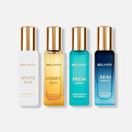

Shalimar is the first oriental perfume in history. L'Eau de Parfum Shalimar is a mythic fragrance with bergamot, iris and vanilla notes ; an intense wake with a touch of impertinence, always glowing which embodies skin-caressing sensuality with a hint of the forbidden.

Hair perfume is a fragrance mist that's formulated especially for your hair and scalp, without ingredients that can dry out your hair or promote frizz. Many hair perfumes are also multitaskers, providing lasting scent as well as beneficial ingredients that lock in moisture and nourish the hair.

French perfume was born out of necessity
During the 19th century, the stench of body odors in the streets of Paris was so unbearable that it even had its own name: “The Great Stink of 1880“. However, as early as 1850, great efforts were being made by Baron Haussmann .
ABOUT US
Perfumes in the $100 range often provide a significant step up in quality compared to more budget-friendly options. At this price point, you're likely to find fragrances crafted with high-quality ingredients, resulting in a more refined and complex scent profile. These perfumes often use natural extracts and essential oils, which contribute to a richer, longer-lasting fragrance experience. This quality is noticeable in the depth and longevity of the scent, making your investment worthwhile.With a budget of around $100, you have access to a diverse array of reputable brands and their signature scents. This price range includes offerings from well-known designers and established fragrance houses, allowing you to explore a variety of fragrance families and styles. Whether you're interested in classic floral scents, modern orientals, or fresh citrus blends, there’s a broad selection available. This variety allows you to find a scent that perfectly suits your personal taste and style.One of the key benefits of spending around $100 on a perfume is the improved longevity and sillage (the trail of scent left behind). Fragrances in this range are typically formulated to last longer on the skin and project further, meaning you won't need to reapply throughout the day. High-quality ingredients and well-balanced compositions contribute to a more enduring scent experience, ensuring that your perfume remains noticeable and pleasant for hours.Perfumes priced around $100 often feature unique and distinctive scent profiles that set them apart from more common, lower-priced options. This price range allows for more innovative and creative fragrance compositions, providing you with a signature scent that stands out. Whether it's a rare combination of notes or an exclusive ingredient, these perfumes often offer something special that can enhance your personal style and leave a lasting impression.A perfume in the $100 range makes an excellent gift choice due to its balance of quality and affordability. It's an elegant and thoughtful present that shows you’ve put effort into selecting something special. The wide range of options available means you can find a fragrance that aligns with the recipient's preferences, making it a personal and meaningful gift. Whether it's for a birthday, anniversary, or special occasion, a well-chosen perfume can convey sophistication and care.
By opting for a perfume around $100, you’re investing in a high-quality, distinctive fragrance that offers longevity and a touch of luxury. This price range provides the opportunity to explore and enjoy well-crafted scents that enhance both your personal collection and your gifting options.